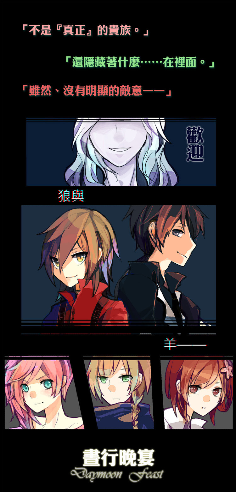

這場鬧劇從一開始就計畫好了。
晚宴被迫結束後，會場一片狼藉。
焦黑的窗簾布、破碎的玻璃、還有油漬滿地的大小白色瓷盤瓷器。
她在露天舞池旁看見椅在柱子旁的柴郡。
「手沒事吧？」望著來人他隨口問道。
「痛死了。」楚歌十分誠實地回答。
「是嗎？他們可是十分手下留情了呢。」柴郡湊向前，戳了戳對方手臂上的繃帶，惹得對方哇哇大叫，「痛——！」
「你是故意的嗎？」
「很明顯嗎？」
對方的話讓楚歌又白了一眼，但這趟下來過於疲憊，她實在懶得再動手。
「她們都安全離開了？」
「剛剛送走的是最後一批。名冊呢？」楚歌轉了轉手，攤掌索取。
「當然是到手了。」他揮了揮手中那疊厚厚的資料，「這次的『羊』比想像中來的多呢。」
「拔去利牙的狼可是連菜都嚼不動呢。」楚歌笑了，接過柴郡手中的資料紙——那是今晚晚宴的來賓名單。
她自小口袋拿出火柴，擦亮、毫不留情地將之點著，看著它扭曲、起皺、化為黑屑。
「在這之後妳打算怎麼做？」
「不知道呢——」模仿著柴郡平時打馬虎的方式，她眨了眨眼，「情報屋先生有好方法嗎？」
他攤了攤手，「這不在委託範圍內喔。」
「真現實，明智之舉。」她笑了，語氣不知道是褒是貶。
她隨意地抹了下臉，在臉頰上留下炭黑的痕跡，呼出了一口長長的氣。
「接下來……」
將雙手背在身後，楚歌眼中似乎因接下來要發生的事而閃爍微光。
「等著被隆重地接待吧。」
自大廳逐漸聚集的腳步聲，蒼白、和紫紅的交錯倒映在她眼中。
※
「楚歌小姐，沒想到這麼快就上門了呢。」
想著對方一臉笑意，楚歌就高興不起來。
她在柴郡的酒吧裡。
由於尋找失蹤人口的不知名的委託，楚歌偷偷在珀香房間查過晚宴之前的名冊了。除了晝行者外、也有一些夜居者的資料。
這個晚宴很奇怪。
她迅速掃視了一下手中的資料，並和柴郡那邊做了比對，都是些莫名失蹤的人。
他們有的共通點，就是都參加了前場玖氏晚宴。
「這只是簡單初步的推論。」拿起筆記錄了下思緒，他抬起棕色眸子，「名單中大部分是晝行者，而自此無下文的恰好與接受玖氏工作的人數略相符合。」
「調查過了，那些工作雖是由玖氏發出，但實際委託人並不是玖氏家族……可以大膽地假設這是貴族間不明說的共識。」
「聽不懂，說結論。」楚歌搶過柴郡的筆，一手撐著頭讓自己不要發火。
柴郡輕笑出聲，「說到底，為什麼非晝行者不可？」
「你認為他們聘僱晝行者，真的是為了幫助他們嗎？」
「也有部分的夜居者啊。」她不滿地撐著頭，另一隻手揉著眉心。
「是一樣的。」柴郡將資料整齊劃一地收齊，重新交至楚歌手中，「還有一個共通點被我們忽略了。」
「還有？」挑眉，她翻找著手中的資料，在查覺到什麼後倏地睜圓了眼。
在楚歌說得出話之前，柴郡溫和的嗓音敲入腦中，「……無名。」
「這些夜居者並沒有與其他人有牽絆或強烈的聯繫，簡單來說、他們沒有『包袱』。」
他側目窺視楚歌的神色，啊、果然越來越難看了啊。
「一樣的，來到這裡的晝行者沒有親人，沒有羈絆，無名無籍。」冰塊在玻璃杯中敲撞，發出清脆聲響。
「就算死去，連屍體也不會留下。」他眨了眨眼，又聳肩。
雖然這段話對於沒見過晝行者死亡的對方來說似乎不足以信任，看來他得要轉換目標重點才是。
「因為不曾與人連結，從一開始就不應該存在，即使消失了，也無所謂。」
求救、悲鳴、嘶啞地伸出雙手，在這個廣大無邊的黑色中，似乎都成了無關緊要的可笑小事。
——只是又重新被黑暗吞噬了而已。
「反正，原本就是不屬於這裡的人們呢。」他眨眼，似乎是在期待對方的反應，偏頭，「……確實很適合做些骯髒的事吧。」
總有些事，是沒有人願意去做的。
危險、吃力、不討好、以及有毀壞名聲可能的任務。
「不會留下證據，又不會被束縛。」
「當不能用的時候，只要抹除掉就好了，挺方便的。」
玻璃杯上的水滴滑落桌面，留下一灘水漬。
「並不是所有人都和妳一般，獲得了保護、擁有居所。」柴郡瞇起了棕色眸子，「楚歌小姐。」
說到這裡，他修長的指頭相握，將下顎抵在上頭，嗓音仍舊溫潤，卻令她感到冰冷。
「妳有想過，為什麼妳會替輔家——鏡雲工作嗎？」
果然，還是會連結到這裡呢。她垂下了頭。
咬牙將聲音悶悶地發了出來，腦海中閃過那人蒼白病態的笑容。
「……與她無關。」替鏡雲工作的原因，早在第一次和主家……玖氏鷺會面時、她就清楚知道了。
但是，如果說這場晚宴是為了這樣的目的舉辦的，那麼、——她抬起頭，憤怒令她蹙起眉頭。
「什麼跟什麼。」楚歌將資料紙緊緊地捏在手上，「怎麼可能……讓他們稱心如意。」
「冒火了呢。」
沒有理會對方的調侃，至少在她眼中，柴郡總有種對於任何事都不掛上心的感覺。
楚歌一手撐著臉，拿起筆在指間轉著，在按捺的慍怒之下，揚起近乎不可見的笑容，「我說，小老闆——」
「你覺得搞砸一場宴會，難度有多高？」